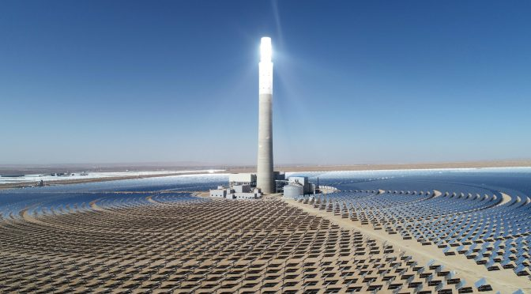

Establishing large-scale solar plants in the Sahara would give confidence to the countries in North Africa
to be less relianton fossil fuels while also meeting their energy demands. In this paper I evaluate the feasibility
of a large-scale solar power plant in the Sahara Desert, focusing on two main technologies Concentrated Solar Power
(CSP) and photovoltaic (PV) systems. CSP offers high efficiency, being able to operate in the day and night as it
can store thermal energy to be used when dark. While PV offers a quicker and more cost-effective way of generating
electricity. Key challenges include water scarcity, extreme temperatures and transport logistics. The analysis
supports a hybrid approach of PV and CSP technologies. Existing projects like Morocco’s Noor Ouarzazate complex
proves the potential of this model. A hybrid strategy offers the most sustainable path toward energy independence
in desert regions.
Introduction
Energy scarcity and unsustainable sources burden less developed regions amid rising global electrical demand.
A new energy conversion standard is essential. Converting the sun's endless energy into usable electricity offers
a logical, powerful solution to meet this growing need and power the world.The Sahara Desert covers an incredible
8.6 million km² (Jeffrey Gritzner, 2025), which is almost the same size as China (Alex Bycroft, 2025), is estimated
to contain only 2.5 million inhabitants which is less than 0.4 per square kilometre (Jeffrey Gritzner, 2025). This
makes Solar energy seems like a sensible solution for mass power generation.
While challenges such as transport of the energy to the constant cleaning of the solar panels, has hindered large
scale implementation these obstacles don't take away the potential of solar energy. I will demonstrate that large-scale
solar development particularly within regions like the Sahara offers the most viable and sustainable path forward for
meeting global energy demand.
Option 1: Concentrated Solar Power (CSP)
CSP uses mirrors to focus the suns energy in one area that becomes extremely hot. This heat energy is then used to
generate electricity through steam turbines (Al-Habaibeh, 2019). This is ideal for the Sahara deserts climate as
temperatures are often high which results in high efficiency.
The desert climate in the night gets considerably colder which is why systems use molten salt to store energy,
allowing electricity to also be produced in the night. The storage of the heat is done through hot storage tanks when
the sun isn’t out the stored molten salt is
sent through a heat exchanger (U.S. Department of Energy, 2024). Here it transfers it heat to water, turning it into
steam that drives the turbines.

Figure 1: Delingha 50MW CSP project, China (Kevin Sara,2020)
Option 2: Photovoltaic (PV) Solar Panels
Photovoltaic solar panels where first used in space in the satellite, Vanguard I in 1958. (Elizabeth Chu, 2018).
It was used then as a necessity to provide electricity to the space craft without constantly needing to
be refuelled. This was achieved using photovoltaic (PV) cells, commonly called a solar cell,
directly converting the suns light into electricity(Raymond T. Fonash, 2025).
Sunlight consists of photons, when then the photons hit the solar cell, they will either be absorbed, pass through or
deflect of the cell (U.S. Energy Administration, 2024). Only when the photon is absorbs by the semiconductor material will
electricity be generated (Richardson, J., 2019). This leads to a lower efficiency as there is no consistency in whether the
photons will get absorbed to generate electricity or not. This way of generating electricity isn’t as effective as CSP
because during the night electricity can’t be generated. But using PV cells in the Sahara Desert has the additional benefit
of being able to build silicon factories in strategic areas in the desert to be able to turn the desert sand into silicon
semiconductors which is the material needed to make the solar panels (Fitzpatrick, M., 2010).
Key Implementation Challenges in the Sahara
1. Logistical barriers to construction
The main issue of developing any large-scale structures in a remote desert is the transport of the materials to begin to
install the solar farms, which would include installing infrastructure such as roads and railways. The continuous need for
water would also be significant challenge as both PV and CSP systems rely on water. Meaning pipelines must also be built
in the desert.
2. Water Requirements for PV and CSP Systems
PV panels need low amount of water for cleaning the panels removing dust to keep efficiency of the solar cell high.
Alternative the use robotic brushes on every panel to remove dust, but this is costly (M.G. Beomonte Zobel, 2020). The CPS
thermal plant, like any steam-based power plant, needs water for cooling this is impractical without installing large-scale
water pipelines. Dry-cooling systems, which replace water with air, reduce water use by more than 90%, though it increases
costs and slightly decrease efficiency (Ouail Kitouni, 2024).
3. Temperature Effects on System Efficiency
Photovoltaic panels have a major disadvantage in efficiency in a hot desert climate, efficiency drops by about 0.5% for
every 1°C above 25°C(EcoFlow, 2025). This isn't ideal in the Sahara Desert where temperatures regularly reach 40°C during the summer
days, in comparison for CSP the high heat from the Sahara is a major advantage as it slightly improves thermal efficiency
(EcoFlow, 2025).
Conclusion: A Hybrid Solution
In considering a large-scale solar power generator in the Sahara Desert, a hybrid approach is the most successful. The PV would
produce huge amounts of cheap energy during peak day hours. Simultaneously, the CSP plant's mirrors focus sunlight to heat
molten salt, charging a massive thermal battery (Wang, Z., 2024). Then during the nighttime, the PV stop generating power.
The CPS plant takes over the stored heat will be used to boil water and produce steam to drive the turbines. Examples include:
Noor Ouarzazate Solar Complex in Morocco which explicitly uses both multiple CSP plants (Noor I, II, and III) with a large-scale
PV plant (Noor IV)(WoRenewables, 2024).
Mohammed bin Rashid Al Maktoum Solar Park in the UAE. This massive project, combines 700 megawatts of CSP with the world's
tallest solar tower and 250 megawatts of PV (C40 Cities, 2019)
While the cost of constructing a CPS farm remains high the hybrid approach has proven to be successful significantly reducing
Morocco’s energy import dependency. This shows that solar energy has a serious future in improving energy independency within
the Sahara and harsh desert climate.
Reference list
Al-Habaibeh A (2019) ‘Should we turn the Sahara Desert into a huge solar farm?’.
The Conversation
. April. Accessed 15/10/25.
Elizabeth Chu (2018). ‘A Brief History of Solar Panels’.
Smithsonian Magazine
. Accessed 27/10/25.
(Jeffrey Gritzner, 2025). ‘People of the Sahara’.
Britannica
. Accessed 28/10/25.
Alex Bycroft (2025). ‘Just how big is China’.
The Learning Adventure
. September. Accessed 28/10/25.
U.S. Department of Energy (n.d.). ‘Heat Exchangers for Solar Water Heating Systems’.
energy.gov
. Accessed 28/10/25.
Raymond T. Fonash (2025). ‘Solar Cells’.
Britannica
. Accessed 28/10/25.
U.S. Energy Information Administration (2024). ‘Photovoltaics and Electricity’.
EIA
. Accessed 28/10/25.
Richardson, J. (2019). ‘What are Solar Cells and Solar Panels Made of?’.
The Renewable Energy Hub
. Accessed 28/10/25.
Fitzpatrick, M. (2010). ‘Sun and Sand Breed Sahara Solar Power’.
New Scientist
. Accessed 28/10/25.
Hansley Narasiah, Ouail Kitouni (2024). ‘Machine Learning Discovery of Cost-Efficient Dry Cooler Designs for Concentrated Solar Power Plants’.
Scientific Reports
.
Antonelli, M.G., Beomonte Zobel, P., De Marcellis, A. and Palange, E. (2020). ‘Autonomous Robot for Cleaning Photovoltaic Panels in Desert Zones’.
ScienceDirect
. Accessed 29/10/25.
Wang, Z., Hölzel, H., Fernandez, L., Aslam, A.S., Baronas, P., Orrego-Hernández, J., Ghasemi, S., Campoy-Quiles, M. and Kasper Moth-Poulsen (2024).
‘Hybrid Solar Energy Device for Simultaneous Electric Power Generation and Molecular Solar Thermal Energy Storage’.
Joule
. Accessed 30/10/25.
WoRenewables (2024). ‘Case Study: Noor Ouarzazate Solar Complex’.
World of Renewables
. Accessed 30/10/24.
C40 Cities (2019). ‘Dubai’s Mohammed Bin Rashid Al Maktoum 5,000MW Solar Park Aims to Save 6.5 Million tCO2e Annually’.
C40 Cities
. Accessed 30/10/25.